Ombra
Cada versão tem suas notas: o que mudou e como atualizar.
Um app grátis para Windows que cuida de toda a sua sessão de VR: rastreamento de corpo inteiro para trackers HaritoraX e compatíveis com SlimeVR, um chatbox do VRChat com sua música e seus batimentos, proteção contra crashers e painéis no seu pulso.
O Ombra roda trackers HaritoraX e compatíveis com SlimeVR no SteamVR por conta própria, sem nenhum outro app. Ele monta seu corpo a partir dos sensores e do headset, suaviza cada tracker e corrige o drift enquanto você joga.
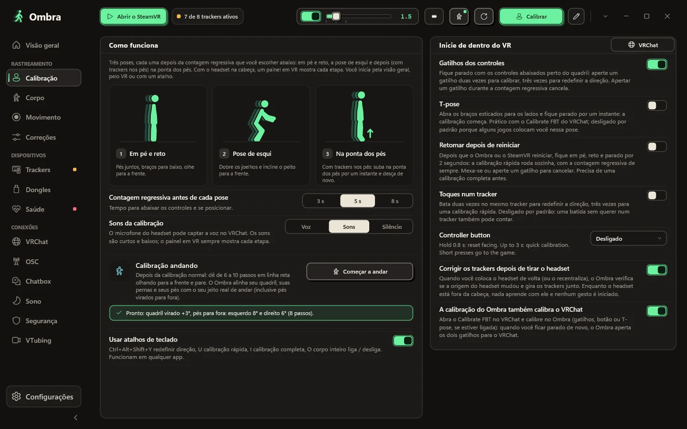
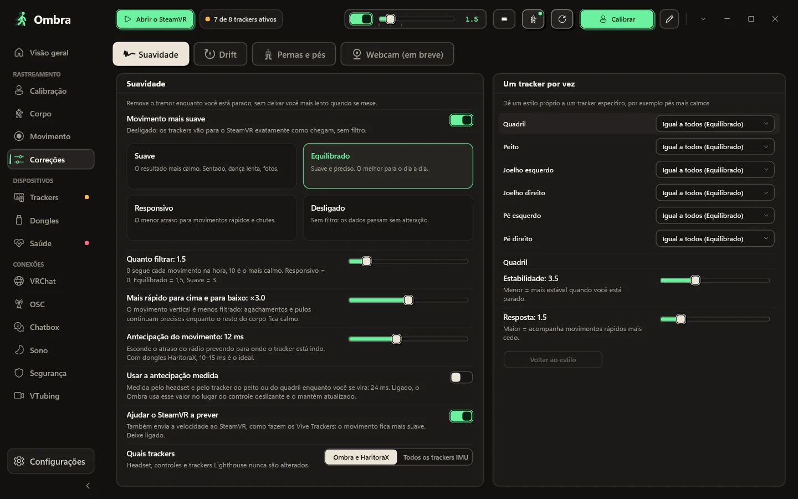
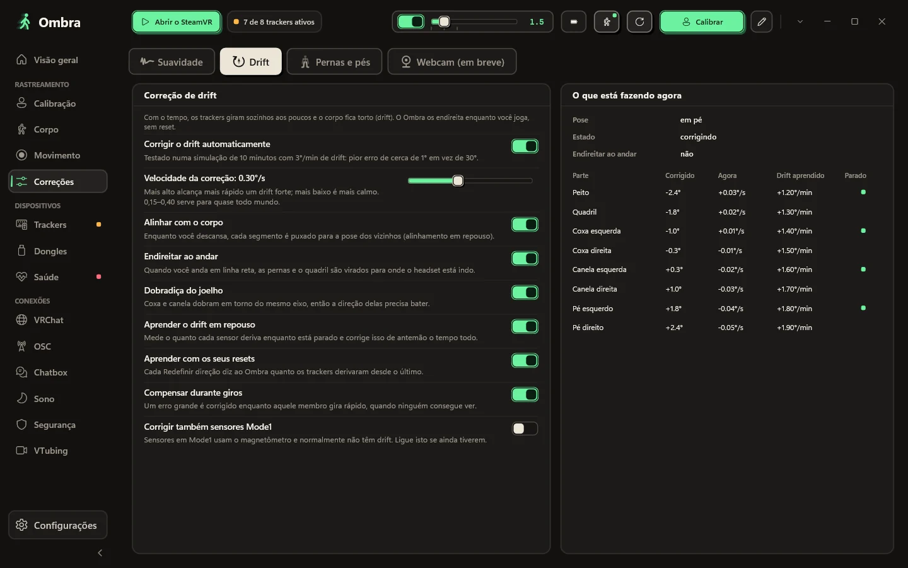
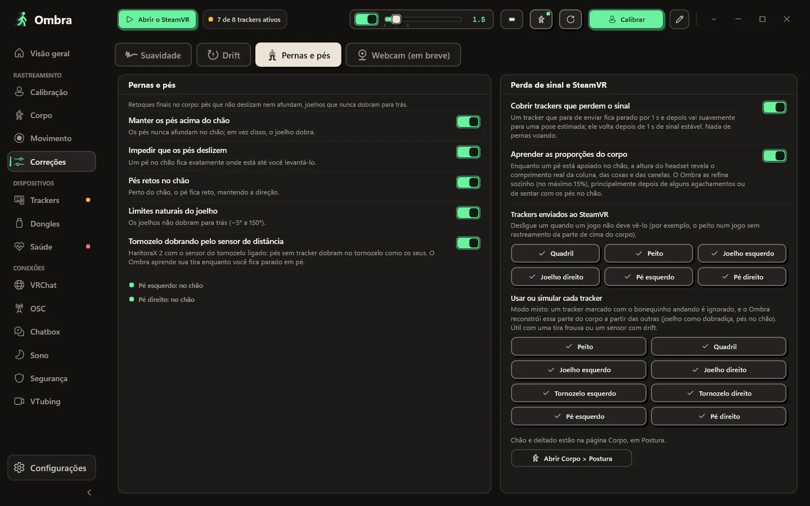
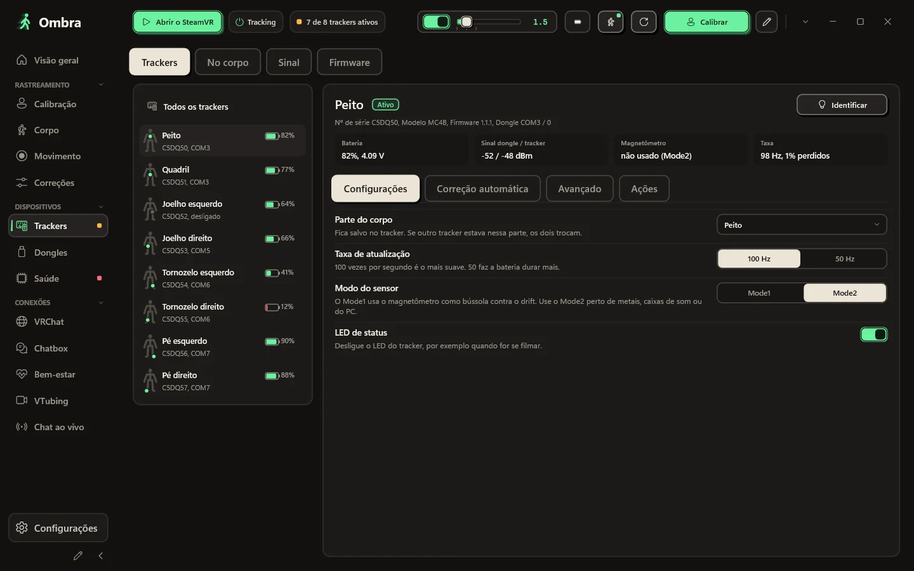
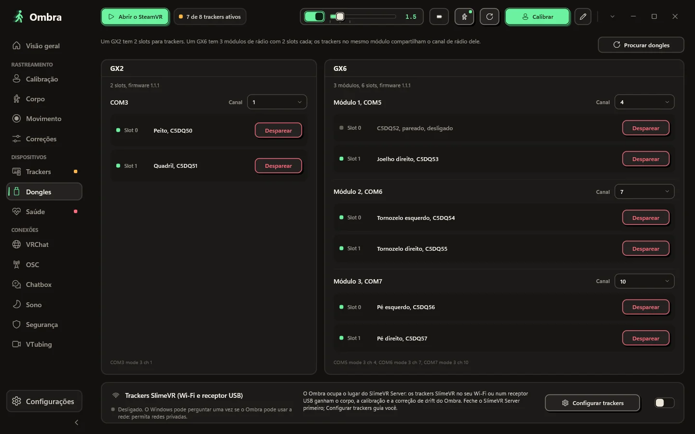
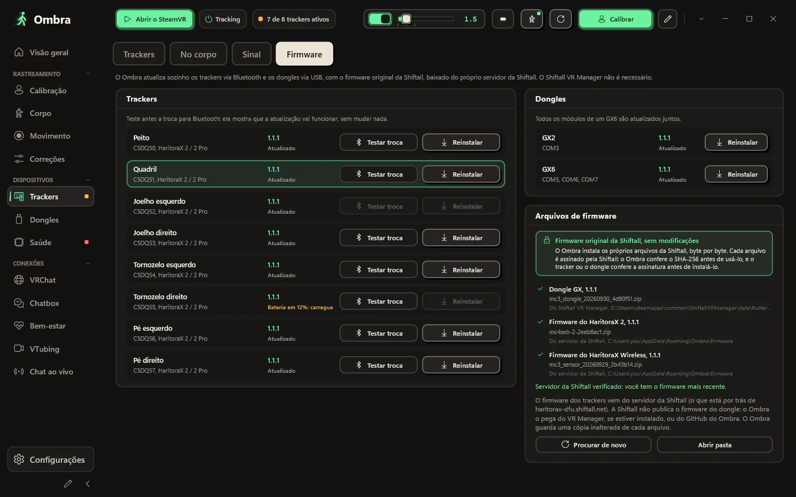
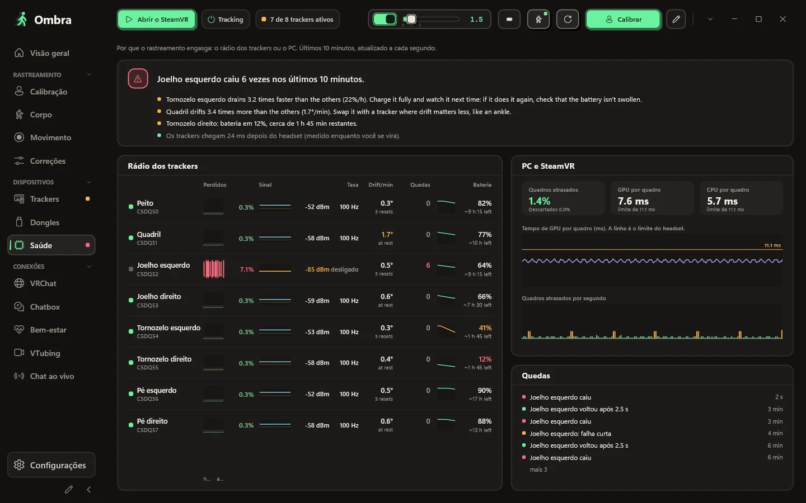
O corpo que o Ombra monta a partir dos sensores e do headset, em vista 3D frontal, lateral ou livre. Cada tracker mostra se está rastreado, simulado ou sem sinal.
Fique em pé e reto, dobre os joelhos na pose de esqui e depois suba na ponta dos pés, se tiver trackers nos pés. O Ombra mostra qual parte do corpo conferir quando algo não está certo.
Suave, Equilibrado, Responsivo ou Desligado, ou qualquer nível num controle deslizante. Dê um estilo próprio a um tracker específico, por exemplo pés mais calmos.
A correção de drift roda enquanto você joga, e uma tabela ao vivo mostra o que ela está fazendo em cada parte do corpo.
Seu corpo continua convincente: os pés ficam acima do chão, pés apoiados não deslizam e os joelhos nunca dobram para trás.
Número de série, firmware, slot no dongle, tensão da bateria, sinal nas duas pontas, estado do magnetômetro e a taxa de atualização real.
Um GX2 tem dois slots; um GX6 tem três módulos de rádio com dois slots cada. O Ombra mostra cada módulo, o tracker em cada slot e o canal dele.
Atualize trackers via Bluetooth e dongles via USB com os arquivos de firmware originais da Shiftall, sem modificações.
Quando o rastreamento engasga, a página Saúde mostra de onde vem o problema: os pacotes perdidos, o sinal e a taxa de atualização real de cada tracker, ao lado dos quadros que o SteamVR perdeu.
Escolha um visual, o que mostrar e em que ordem. O Ombra mantém tudo dentro do balão e nunca o lota.
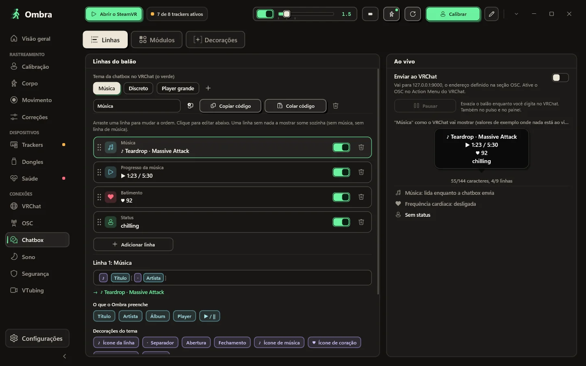
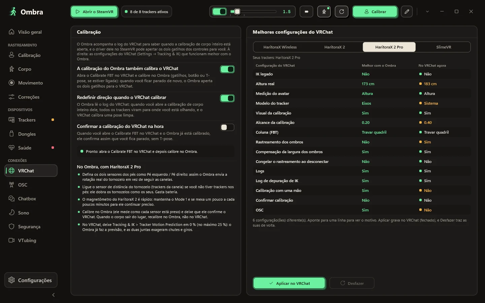
Comece por um visual: oito balões reais do VRChat desenhados com as suas próprias linhas, do limpo ao kawaii. Ligue e desligue módulos, suba ou desça cada um, escolha um dos doze divisores que o VRChat desenha de verdade, ou coloque tudo numa linha só.
T7RK-1J85-6, sem servidor no meioA calibração do Ombra também calibra o VRChat, e as configurações de corpo inteiro que o VRChat recomenda para os seus trackers estão a um clique, com opção de desfazer.
O VRChat anota quem entra e qual avatar cada pessoa carrega. O Ombra lê esse log no seu PC, então, depois de um crash, você vê o provável crasher, e o avatar dele fica a um clique de ser ocultado.
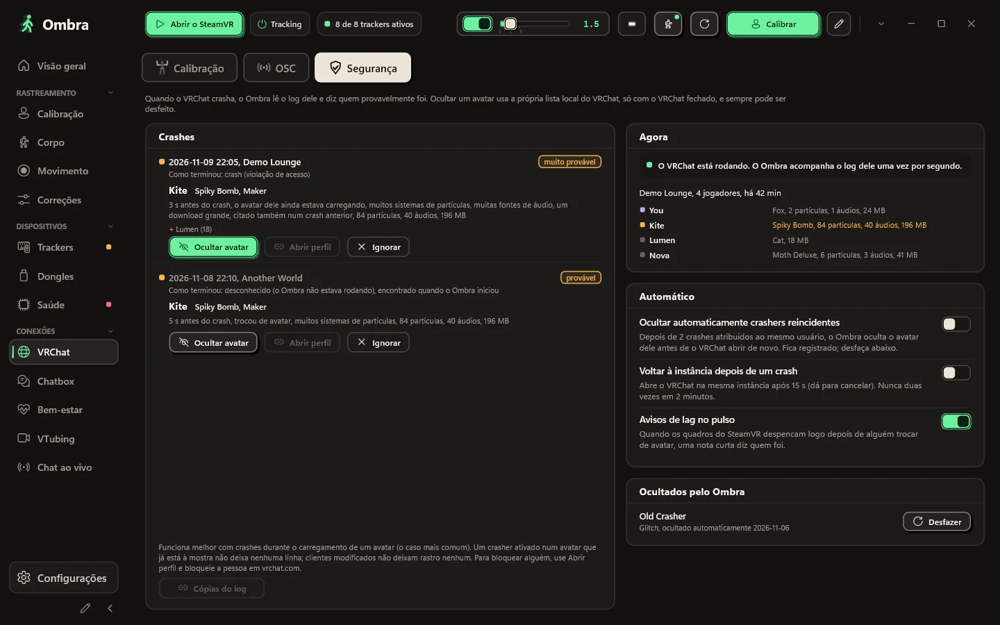
O que você precisa enquanto joga está no seu pulso e no painel do SteamVR.
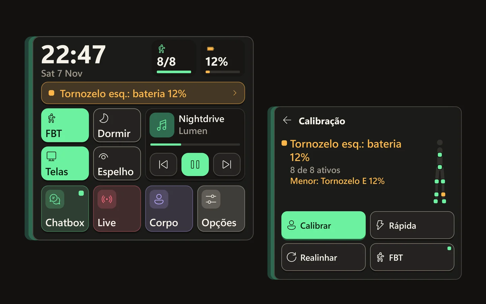
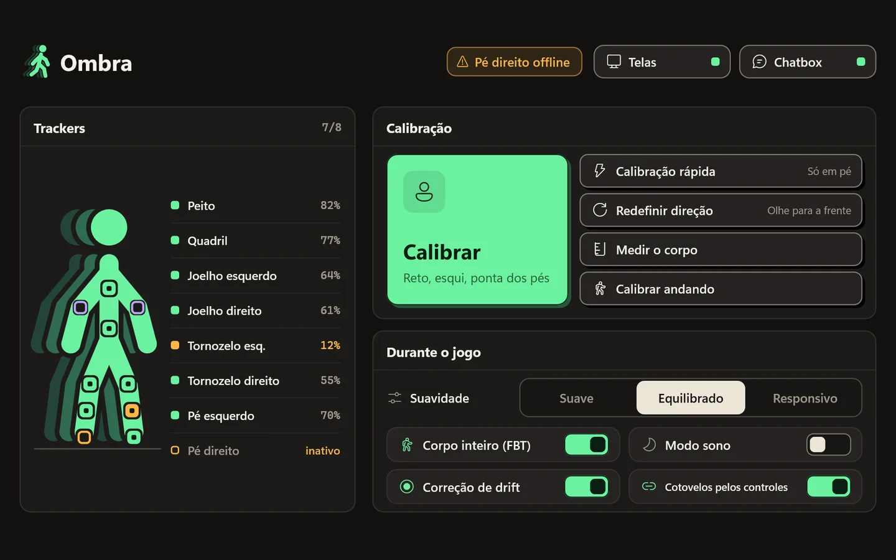
Olhe para o pulso e o painel aparece: um relógio grande, quantos trackers estão ativos e a bateria mais fraca, o estado da calibração, quatro chaves com nome (corpo inteiro, sono, telas, espelho) e sua música. As notificações do PC também aparecem ali. Desvie o olhar e ele some.
Cada tracker com a bateria, botões grandes para calibrar e redefinir a direção, e as opções que você muda enquanto joga.
Organize a barra lateral e escolha suas próprias cores. Um clique traz o original de volta.
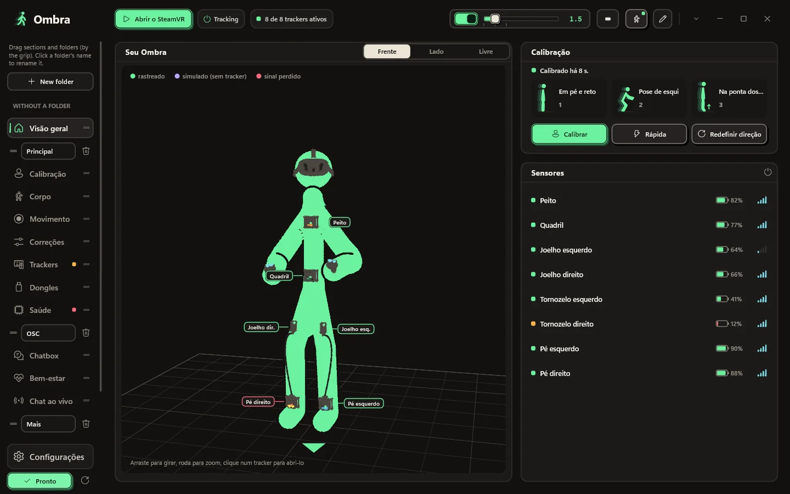
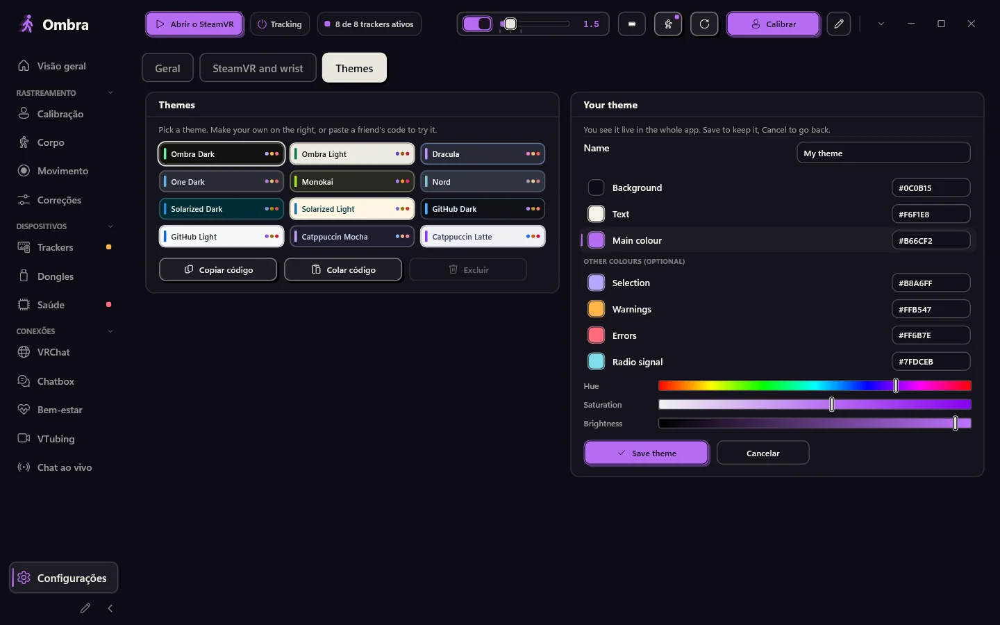
Clique no lápis no fim da barra: crie pastas, dê nomes a elas e arraste seções e pastas inteiras para onde quiser.
Configurações → Temas → Seu tema: escolha um fundo, uma cor de texto e uma cor principal, com barras ou códigos hexadecimais. O Ombra calcula o resto. Você vê ao vivo no app inteiro e nos painéis em VR; salve ou cancele para voltar.
Sem navegador dentro, com 12 temas de cores e o seu. O SteamVR abre o Ombra, que espera na bandeja com um painel para seus trackers.
Os botões que você mais usa, na ordem que você quiser.
O Ombra avisa quando sai uma nova versão e nunca atualiza enquanto o SteamVR está rodando.
Opcional: depois de reiniciar, o Ombra calibra sozinho assim que você ficar parado.
Aqui está tudo o que o Ombra faz com a internet, e tudo o que ele não faz.
O Ombra muda com frequência. Aqui está o que a versão mais recente traz, direto das notas de versão, e o que veio antes.
Ombra
Cada versão tem suas notas: o que mudou e como atualizar.
Windows 10 ou 11 (64 bits) e SteamVR. HaritoraX 2, 2 Pro ou Wireless com um dongle GX, ou trackers compatíveis com SlimeVR.
Um único arquivo, Ombra-Setup.exe. O botão abaixo sempre baixa a versão mais recente.
Só um app pode usar os dongles por vez.
Não precisa de permissões de administrador e registra o driver do SteamVR. Se o Windows der um aviso, veja as perguntas abaixo.
Ligue os trackers, inicie o SteamVR, coloque-os no corpo e clique em Calibrar.
Última versão. Todas as versões e mudanças
Cada versão é verificada com o Microsoft Defender e enviada ao VirusTotal: ver o relatório.
Se faltou alguma coisa, pergunte no GitHub.
Não. O Ombra se comunica direto com os dongles, pareia trackers e atualiza o firmware com os arquivos originais da Shiftall. Deixe outros apps de trackers fechados enquanto o Ombra estiver rodando.
HaritoraX 2, 2 Pro e Wireless com dongles GX2 ou GX6, e trackers compatíveis com SlimeVR por Wi-Fi ou receptor USB, por exemplo Butterfly e Smol Slime. Trackers de base station como os Vive trackers podem ser alinhados com um Quest, e o Ombra também pode suavizar outros trackers IMU já no SteamVR. HaritoraX 1 (com fio) não é compatível.
Sim. Com um PC, pelo SteamVR, com cabo ou sem fio. Com o VRChat rodando no próprio Quest, o Ombra envia seu corpo via OSC a partir do PC, sem SteamVR.
O instalador ainda não tem assinatura de código, então o SmartScreen não o reconhece. Clique em Mais informações e depois em Executar assim mesmo. A instalação vai para a sua pasta de usuário e não precisa de permissões de administrador.
A instalação inclui o driver do SteamVR do próprio Ombra. Seus trackers aparecem no SteamVR com as funções já definidas (quadril, peito, joelhos, pés, cotovelos), e o SteamVR abre o Ombra para você.
Não. Dispositivos Lighthouse, headsets e controles nunca são modificados. O driver só cria os trackers virtuais do Ombra e, apenas se você ativar essa opção, suaviza outros trackers IMU.
Não. Muita gente usa o Ombra só pela chatbox, pelas ferramentas do VRChat e pelo corpo feito a partir do headset. Escolha Sem trackers na instalação e o Ombra nunca pede um dongle.
Sim. Execute Ombra.exe --demo para ter oito trackers de demonstração num GX2 e num GX6. A demo nunca mexe em portas COM, Bluetooth, SteamVR nem nas suas configurações.
O app e este site estão em inglês, italiano, alemão, francês, espanhol, português do Brasil, japonês, coreano, chinês simplificado e russo. O Ombra usa o idioma do seu Windows, e você pode trocar em Configurações.
Não. O Ombra é um projeto independente, grátis para baixar e usar. O código-fonte não é publicado; você pode sugerir recursos, extensões e traduções no GitHub.
Sim. O Ombra é feito por um único desenvolvedor com ferramentas de IA, principalmente o Claude, da Anthropic, para pesquisa, código, testes e traduções. O que o Ombra faz é decidido pelo desenvolvedor, que aprova cada versão. Nenhum gerador de imagens por IA: as capturas de tela são reais. Dentro do Ombra, só o ditado para o chatbox, opcional, usa IA: o modelo Whisper roda no seu PC e sua voz nunca sai dele.
Baixando o Ombra-Setup.exe
Quando o Windows disser que protegeu seu PC, clique em Mais informações e depois em Executar assim mesmo. O instalador ainda não tem assinatura de código, então o SmartScreen não o reconhece.
Se o Ombra funcionar bem para você, uma estrela no GitHub ajuda outras pessoas a encontrá-lo.
Dar uma estrela no GitHub